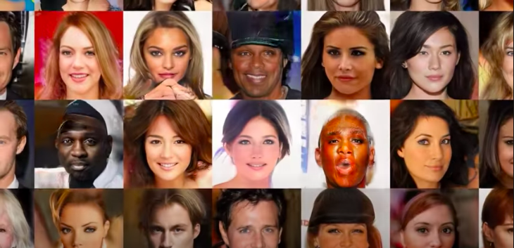

Recognitions
> "Joy Buolamwini and computer scientist Timnit Gebrurevealed that facial recognition technology (FRT) has difficulty identifying [<] the gender of darker-skinned subjects. The problem stems from the libraries on which these algorithms[+] “a set of mathematical instructions or rules that, especially if given to a computer, will help to calculate an answer to a problem” [©: Cambridge Dictionary (2022). University Press] have been traditionally trained: the “ground truth” for these programs are the faces of Hollywood celebrities [❑]  [❑] Figure 5. Faces generated using the faces of Hollywood celebrities.Progressive Growing of GANs. and university undergraduates, those well-known hotspots of diversity[+] “the fact of many different types of things or people being included in something; a range of different things or people” [©: Cambridge Dictionary (2022). University Press] . At a fundamental level, this “curation” means that ground truth = deep fake [>]ground truth = deep fake." [©:3] [©:3] Chun, Wendy. 2021. Discriminating Data: Correlation, Neighborhoods, and the New Politics of Recognition. Cambridge, Massachusetts: The MIT Press.
> "Keyes’s study of automatic gender detection in facial recognition shows that almost 95 percent of papers in the field treat gender as binary, with the majority describing gender as immutable and physiological[+] “relating to the way in which the bodies of living things work” [©: Cambridge Dictionary (2022). University Press] . While some might respond that this can be easily remedied by creating more categories, this fails[+] “to not succeed in what you are trying to achieve or are expected to do” [©: Cambridge Dictionary (2022). University Press] to address the deeper harm of allocating people into gender or race categories without their input or consent. This practice has a long history. Administrative systems for centuries have sought to make humans legible by applying fixed labels and definite properties. The work of essentializing and ordering on the basis of[+] “a way or method of doing something” [©: Cambridge Dictionary (2022). University Press] biology or culture has long been used to justify forms of violence and oppression." [©:2] [©:2] Crawford, Kate. 2021 Atlas of AI: Power, Politics, and the Planetary Costs of Artificial Intelligence. New Haven, London: Yale University Press.